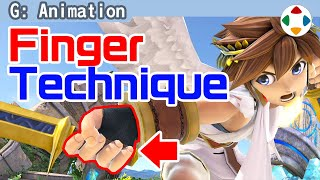
速览
手里拿着东西时，有一个容易犯的错：不该这样拿，正确的是这样。握住东西时，垂直于手握持是自然的；但要配合前臂动作（例如挥动）时，相对于手是斜着的。坏例子就是这样，非常像手办。多边形少、构造简单的时代有不得已之处，但用手指角度等做出自然握法很重要。另一方面，手指相对其小巧却非常复杂，考虑处理负荷时注定最先被削减——当然不是指模型上没了，而是看似在动其实被固定，或者做了几种手指图案再分配替换。他也曾感到可动手指的多少说明了硬件性能；当然那只有在同样游戏、同样规则下运行时才成立，对用高规格硬件的人来说可能早就是解决了的路。无论如何，做游戏时总要考虑性价比：在这游戏画面中，如果手指有很多层级结构并一直计算，会是相当大的损失。依硬件与目标而定，但省该省的，把处理用在重要处，是一直在考虑的事。
1. 握法的常见错误 0:03
手里拿着东西时，有一个容易犯的错：不该这样拿，正确的是这样。
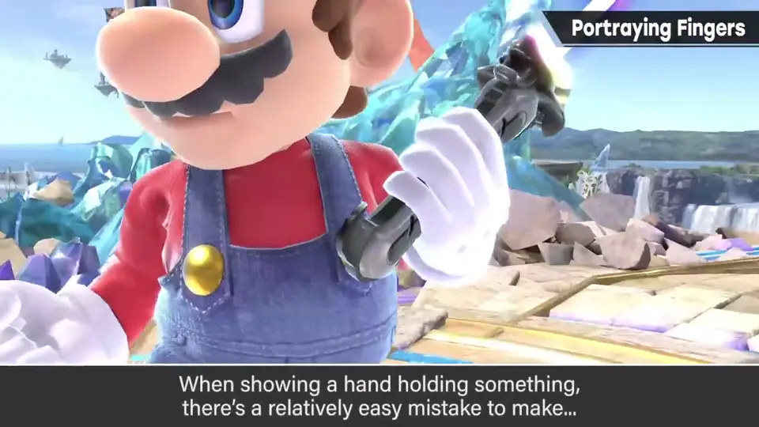
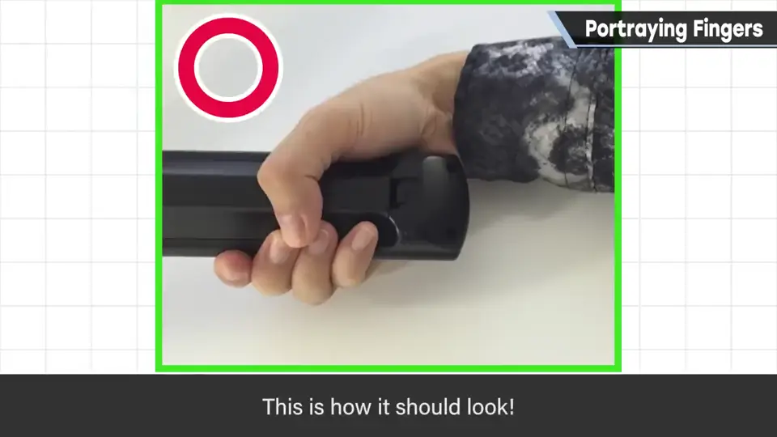
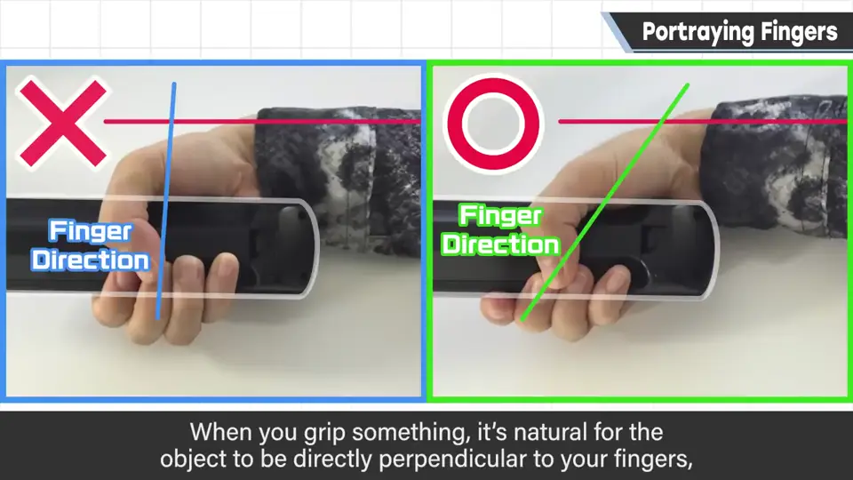
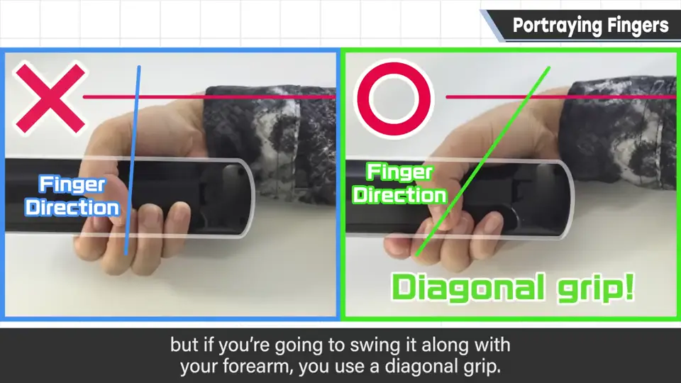
2. 坏例子与好例子 0:31
坏例子就是这样，非常像手办。
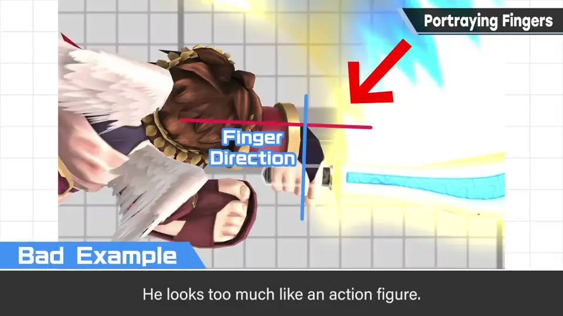
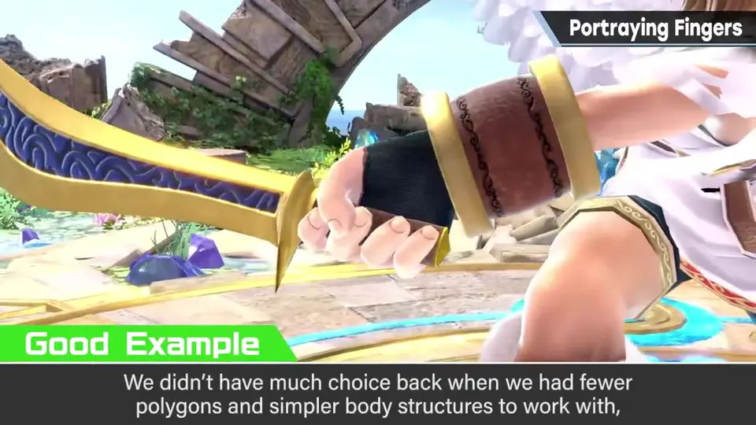
多边形少、构造简单的时代有不得已之处，但用手指角度等做出自然握法很重要。
3. 手指最先被削 0:46
另一方面，手指相对其小巧却非常复杂，考虑处理负荷时注定最先被削减。
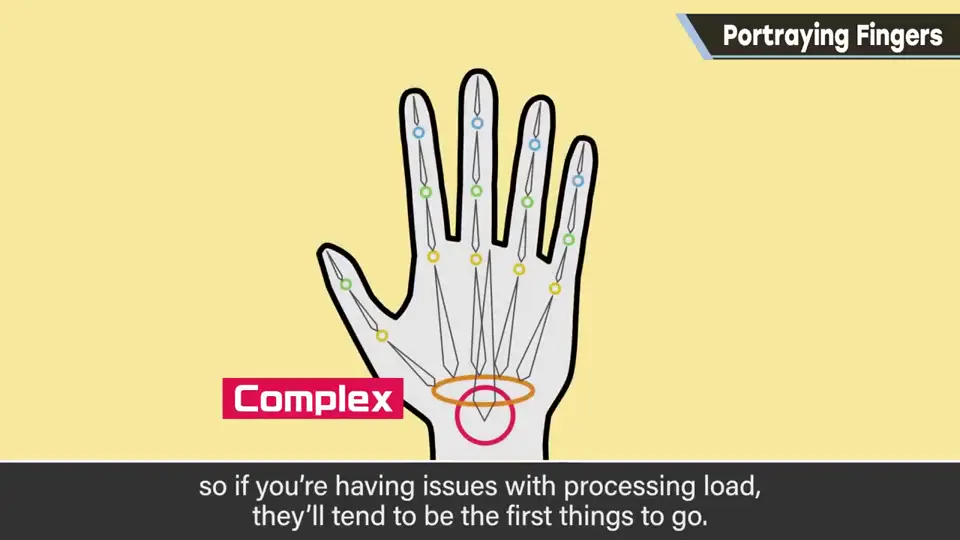
- 不是模型上没了，而是看似在动其实被固定。
- 或者做几种手指图案，按需分配替换。
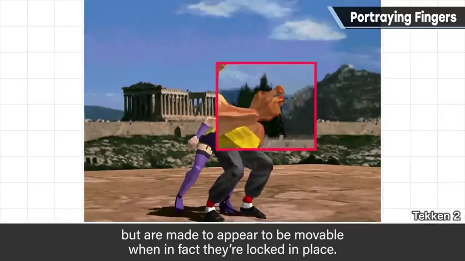
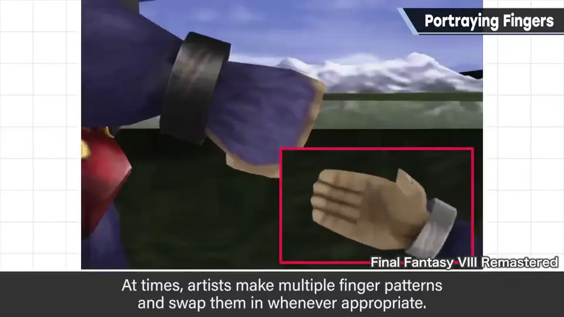
4. 硬件与性价比 1:16
他也曾感到可动手指的多少说明了硬件性能。当然那只有在同样游戏、同样规则下才成立；对用高规格硬件的人来说，可能早就是走过的路。
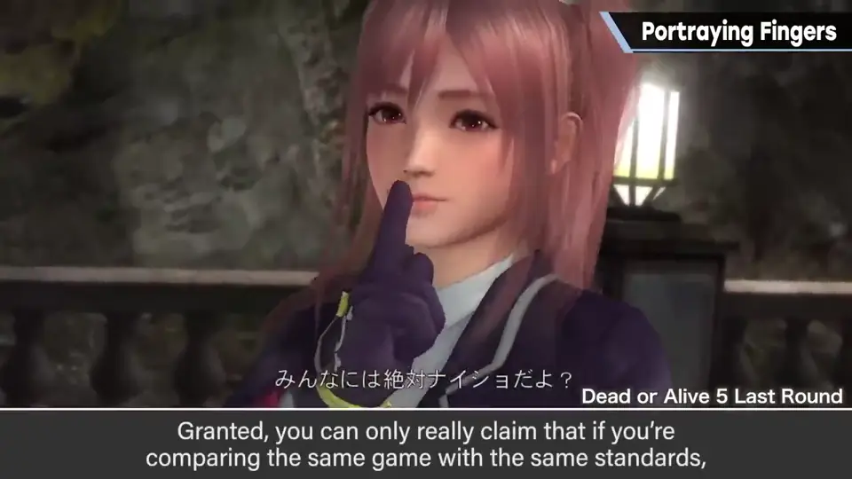
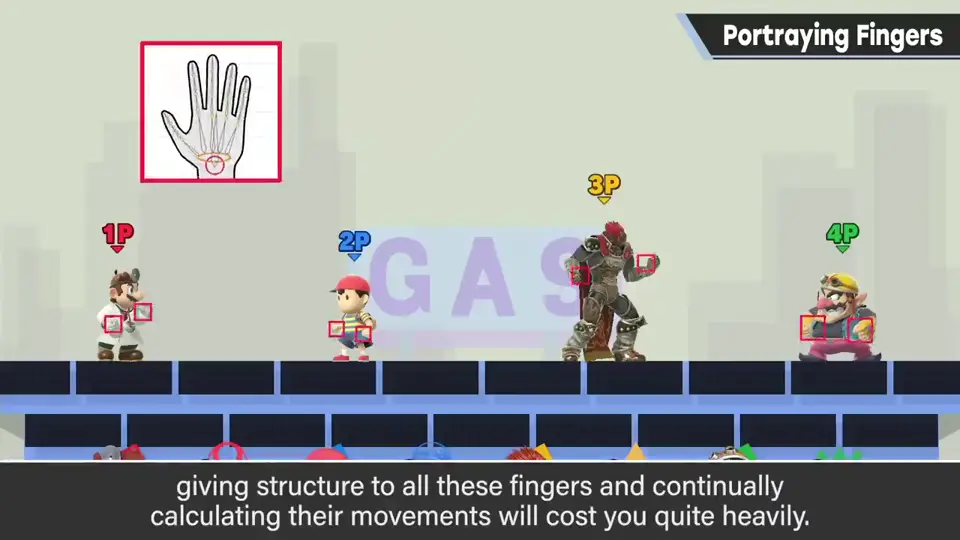
无论如何，做游戏时总要考虑性价比：在这样的游戏画面中，若手指有很多层级并一直计算，会是相当大的浪费。
自测题
1. 什么时候应该斜着握持物体？
需要配合前臂动作（如挥剑）时。 0:30
2. 处理负荷紧张时手指常被怎么处理？
固定住看似在动，或做几种手指图案替换。 1:06
3. 关于手指的总原则是什么？
考虑性价比：省该省的，把处理用在重要处。 1:55